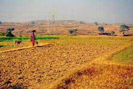
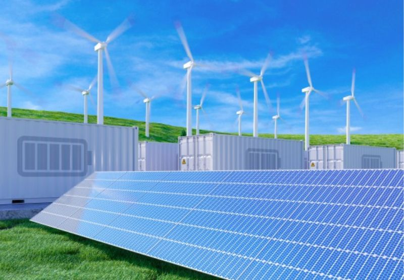
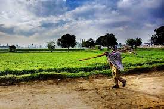
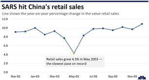
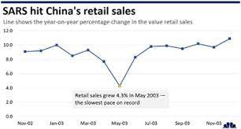

Renewable Energy Sources Reach New Record in 2022
Investments in Renewables Reach New High in 2022 But Need Massive Increase
Global investments in energy transition technologies in 2022 was $1.3 trillion

Global investments in energy transition technologies achieved a historic milestone by reaching a
record high of $1.3 trillion in 2022, a 19% increase over 2021 and a 50% jump from the pre-pandemic
levels of 2019, according to the International Renewable Energy Agency (IRENA).
Despite the record-high investments, it is crucial to note that annual investments must increase over
four-fold to stay on course toward the 1.5°C scenario, the agency said in a report.
The world must aim for average annual investments of $5.7 trillion between 2021 and 2030 and $3.7
trillion between 2031 and 2050 to successfully transition to sustainable energy sources, the report
said.
Despite facing various economic, social, and geopolitical obstacles, the world's investments in
renewable energy generation have maintained an upward trajectory that started in 2018.
The latest data indicates that investments in this sector hit a new high in 2021, reaching $430
billion, representing a 24% surge from the previous year. Furthermore, in 2022, these investments
experienced an additional 16% boost, nearing $500 billion.
Despite the overall growth in annual renewable energy generation investments, IRENA said it is
important that these investments have been primarily concentrated in the power sector. Between 2013
and 2020, power generation assets received, on average, 90% of renewable investments each year and
as much as 97% in 2021 and 2022.
Adopting sustainable agriculture practices
Sustainable agriculture is an approach to farming that prioritizes natural and renewable resources over synthetic inputs like fertilizers and pesticides. According to the United Nations' Food and Agriculture Organization sustainable agriculture seeks to “meet the needs of present and future generations, while ensuring profitability, environmental health, and social and economic equity.” But because there's little regulatory oversight for this practice, farms can call themselves “sustainable” without having to back it up.

Read Next
Offshore Wind Isn't to Blame for Whale Deaths.
Offshore Wind Isn't to Blame for Whale Deaths
Sustainable agriculture is an approach to farming that prioritizes natural and renewable resources over synthetic inputs like fertilizers and pesticides. According to the United Nation's Food and Agriculture Organization sustainable agriculture seeks to “meet the needs of present and future generations, while ensuring profitability, environmental health, and social and economic equity.” But because there's little regulatory oversight for this practice, farms can call themselves “sustainable” without having to back it up.
What Is Sustainable Agriculture?
While conventional agriculture places significant pressures on the environment, sustainable agriculture is characterized by its ambition to do the opposite.
According to the USDA's National Institute of Food and Agriculture, sustainable agriculture aims to protect the environment, maintain soil fertility and even expand our natural resource base. It lists the main goals of sustainable agriculture as 1) economic profitability for farmers, 2) the promotion of environmental stewardship, and 3) increased welfare for farmers, their communities, and their animals, all while producing enough to meet the food needs of humans.
Take action and make a difference
Why Is Sustainable Agriculture So Important?
As the effects of climate change and environmental damage accelerate, food systems research suggests that preserving our natural resources, including our capacity to grow food, is of the utmost importance. Sustainable agriculture aims to produce adequate short-term yields without inflicting long-term harm on the environment.
The tenets of sustainable agriculture also do not support housing animals in factory farms — concentrated animal feeding operations (CAFOs) that house upward of 1,000 animals in tight quarters — due to the detrimental impacts that these operations can have on the environment and public
However, the label “sustainable” is not well-regulated by governments, so there's generally no way to know if a farm that calls itself sustainable is actually following all or any of the tenets of this farming philosophy.
Circular Economy Model Gains Popularity in Businesses

 

Economic elements that influence business and consumer behaviour are referred to as the economic environment. The economy of a country has an impact on investment decisions. There are several factors, both internal as well as external that affect the economy.
Elements of Economic Environment
Several external factors have a significant influence on a country's economy. These factors play a huge role in deciding consumer behaviour and financial flow of a country, thereby affecting its economic activities. All these elements together constitute the economic environment definition.
These elements of economic environment are as follows :
Gross Domestic Product (GDP)
Gross Domestic Product is the total value of all products and services produced in a country. Therefore, the growth of GDP signifies that the economy of a country is stable and improving. It also means that people have more disposable income that, in turn, leads to increased demand for products and services.
It evaluates the financial worth of final goods and services—those that are purchased by the end user—produced in a country over a specific time period (say a year). It includes all of the output generated within the country. GDP also includes non-market production, for example, education services which are provided by the government itself.The GDP growth rate measures the economic reports and amount of a country's economic growth (or contraction). Faster growth in the gross domestic product (GDP) expands the overall size of the economy and strengthens fiscal conditions.
Unemployment
A high level of unemployment in a country means that such an economy is not using its resources to its full potential. At the same time, it would negatively impact individual disposable income that will result in lower demand. It affects the commercial aspect of an economy significantly. This phenomenon is markedly noticed in the existing economic environment in India.
The individuals not only lose income but also face other hurdles financially as well as mentally. Government expenses extend further than the provision of benefits to the loss of worker output, which eventually reduces the gross domestic product (GDP) which in turn leads to economic issues and then poverty. It will lead to lower GDP growth and fall in tax revenue for the government.
Government Policy
Government policies also play a huge role in influencing the economy of a country. Government policy can have a major influence on the economic environment. This can include fiscal or monetary policy. An example of monetary policy is a reduction in interest rates on bank loans which encourages consumer's demand for loans. An example of fiscal policy would be when the government decides to reduce income tax. Both of these policies attempt to gradually increase individual disposable income and encourage consumers to spend more, thus boosting commercial activities.
It can influence interest rate, taxation and a rise, which tends to increase the borrowing cost. Consumers will spend less if the interest is higher but if the interest rate is lower it might attract investments. In general, a government's active role in responding to the economic circumstances of a country is for the purpose of preserving important stakeholders' economic interests.